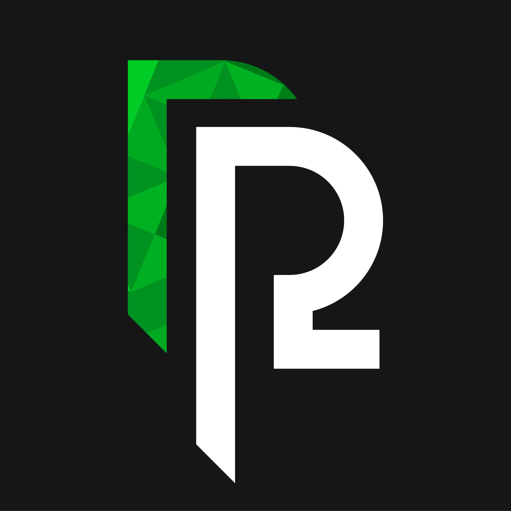
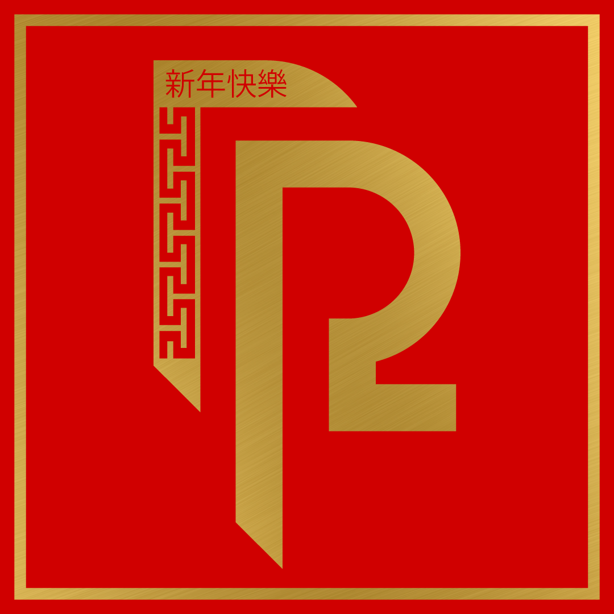
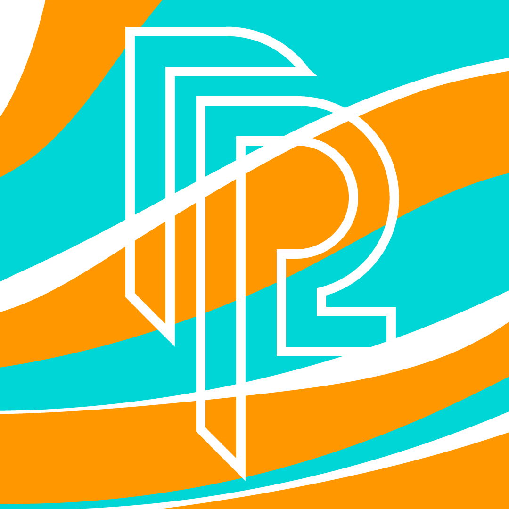

Realrayford
These are different terations of the realrayford logo created for social media and branding purposes.
New iterations are usually inspired by holidays and changes in season, and vinyl stickers are usually
ordered for every iteration.
From left to right: Original, Chinese New Year, Summer.
Warren Organization on Cultural Experience (WOCE)
A member of WOCE at the University of California, San Diego asked me to update their logo.
This is the first and final product.
PVRG
The full name is a secret, but 'PVRG' is the acronym my friends and I use for our group/team name
in competitive video games. I needed a new wallpaper and couldn't find one I liked, so I made one instead,
along with a new logo for our group/team. This was the result.
Corpus Callosum (CoCa)
This logo represents CoCa, an organization at the University of Southern California (USC),
which focuses on combining engineering and art.
This logo is not an original design, but a correction of the original, so I can't take much credit
for this peice. The organization was in need of the original files, but its designer was not available
at the time. I volunteered to recreate it per request of their vice president.
While recreating the logo, I noticed it was neither aligned to a shape, specifically a circle, nor were its elements
proportionate in size and distance relative to eachother. The recreation was completely done from scratch,
with reference to the original, but without image tracing or manipulation of the original image.
Check out the timer here
Pomodoro Timer
For my software engineering course, I was assigned to team of eight members. The main focus
of the course was to plan, develop, and test a web application based on the Pomodoro technique using
agile methodologies.
Each member was given a specific role/task each week. During the beginning, my main tasks were to design the interface ande create working prototypes.
After we decided on a final design, I would soon work on the tasklist functionality and some front-end development. Towards the
end of development, before the deadline, I was responsible for refining the overall application making sure our team didn't miss
any details in terms of features.